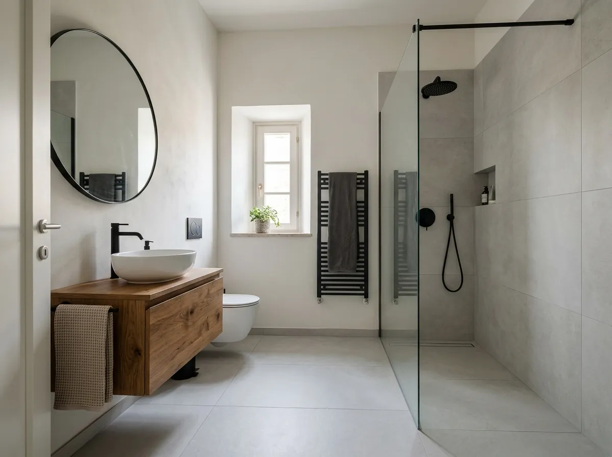
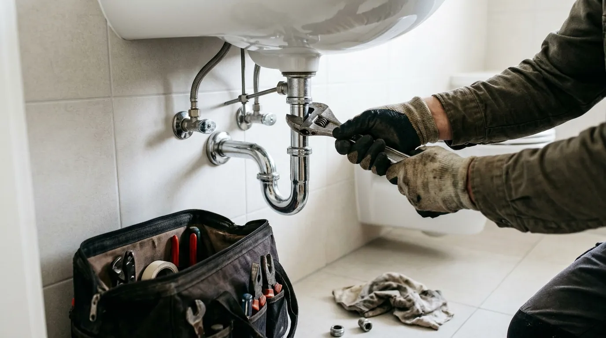
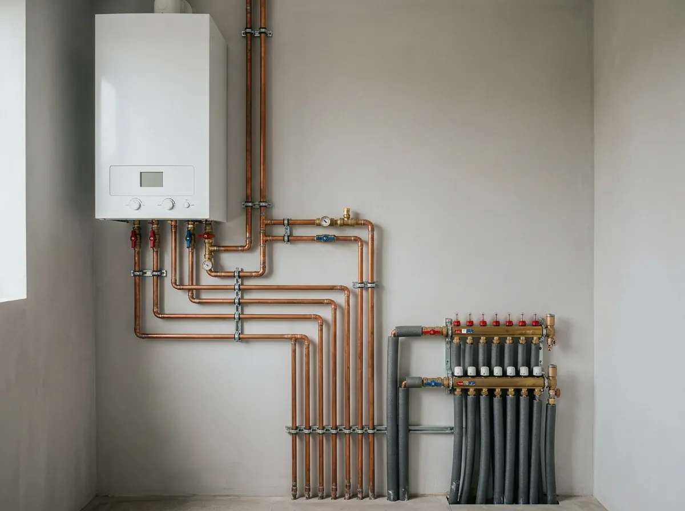

Bagni rifatti
Dalla demolizione alle piastrelle, con un solo referente. Doccia a filo pavimento quando lo scarico lo permette.
Sito dimostrativo di un'attività inventata · Nomi, tempi e dati sono di esempio · Foto generate con l'IA
Idraulico a Bologna e prima cintura

Scegli il problema: ti diciamo cosa fare nei prossimi minuti.
Nessun problema scelto.

Dalla demolizione alle piastrelle, con un solo referente. Doccia a filo pavimento quando lo scarico lo permette.

Sostituzione della caldaia, lavaggio dell'impianto, valvole termostatiche sui termosifoni.
Scorri: l'acqua segue il percorso, dalla tua chiamata al lavoro finito.
Ci racconti cosa succede, meglio con una foto. Ti diciamo subito se è un lavoro per oggi.
Una fascia di un'ora, non una giornata intera. Se tardiamo ti avvisiamo.
Il tecnico guarda, spiega cosa va fatto e quanto costa. Decidi tu se procedere.
Ripariamo, apriamo l'acqua e controlliamo con te che sia tutto a posto.
Ti lasciamo ricevuta e foto del lavoro fatto, utili anche per l'amministratore di condominio.
Siamo tre idraulici con due furgoni attrezzati per le riparazioni più comuni. [Nome del titolare] ha lavorato dieci anni nella manutenzione dei condomini prima di mettersi in proprio: per questo a ogni intervento lasciamo foto e ricevuta, anche quando il lavoro è piccolo.
Bologna in tutti i quartieri e i comuni attaccati. Per le urgenze in giornata restiamo entro questa zona.
Spazio per i documenti veri: abilitazione per gli impianti idraulici e termici (D.M. 37/2008), iscrizione al catasto impianti termici regionale, dichiarazione di conformità a ogni lavoro.
Te lo diciamo al telefono prima di partire, insieme alla fascia oraria. Nessuna sorpresa a fine lavoro.
Per perdite e caldaie ferme sì, la mattina. I lavori programmati li facciamo dal lunedì al venerdì.
Sì, con foto e relazione per l'amministratore. Le colonne di scarico le videoispezioniamo prima di aprire i muri.
Per un bagno di misura normale servono di solito dieci giorni lavorativi. Nel preventivo trovi il calendario giorno per giorno.
Più dettagli ci dai, più è facile arrivare con il pezzo giusto.